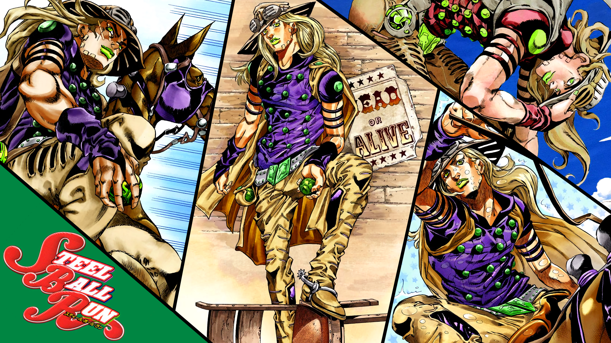
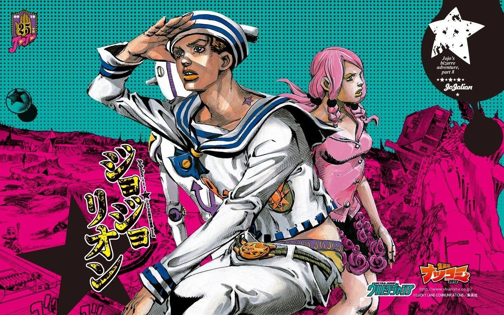
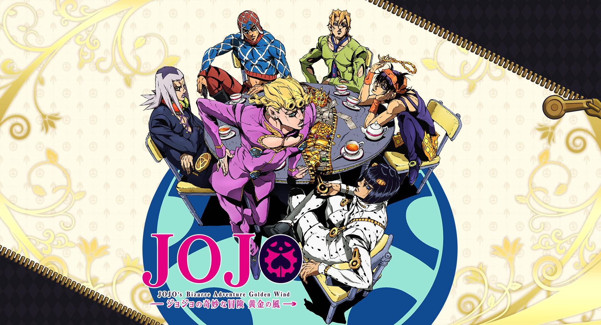

A obra já tem 9 partes. Cada uma se passa em uma época e em um lugar diferente.
Lista completa
| Parte | Nome | Protagonista | Ano de estreia |
|---|---|---|---|
| 1 | Phantom Blood | Jonathan Joestar | 1987 |
| 2 | Battle Tendency | Joseph Joestar | 1987 |
| 3 | Stardust Crusaders | Jotaro Kujo | 1989 |
| 4 | Diamond is Unbreakable | Josuke Higashikata | 1992 |
| 5 | Golden Wind | Giorno Giovanna | 1995 |
| 6 | Stone Ocean | Jolyne Cujoh | 1999 |
| 7 | Steel Ball Run | Johnny Joestar | 2004 |
| 8 | JoJolion | Josuke (Gappy) | 2011 |
| 9 | The JOJOLands | Jodio Joestar | 2023 |
Minhas partes favoritas



A parte 3 é a mais famosa porque foi nela que os Stands
apareceram pela primeira vez.
Antes disso, as lutas eram feitas com Hamon, uma técnica de respiração.